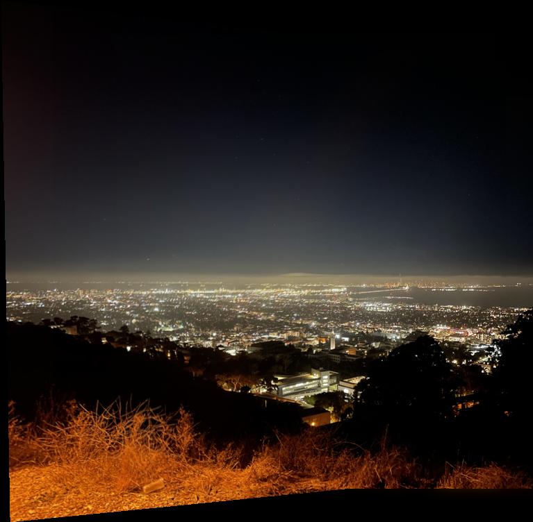

The goal of this project is to combine images into mosaics through perspective warping and matching keypoint locations.
In part 1, we capture a set of images and combine them into a mosaic by computing homographies with manually labeled keypoints.
To create an image mosaic the first thing that we need is images. For a perspective warp to work properly and actually show what one image would look one the same perspective plane as the other, the images must all be taken with the same center of projection. Otherwise, the effects of parallax combined with the 3d geometry of the scene makes it so each image in the scene observes fundamentally different things.
I went to Lawrence Hall of Science at night to capture the set of images I will be using for the mosaic. Here are the two images, I will use for the part 1 mosaic.
To perform a perspective warp, we must first extract the appropriate homography matrix. The homography matrix takes a set of points and transforms them to the locations of another set of points. It also satisfies the equation:
Where is a scaling factor for a
corresponding point pair,
and
are a corresponding point pair, and
is a matrix of the form:
Given a set of corresponding points, we can form a system of linear equations, and solve for the 8 unknowns of the H matrix. We need at least 4 point pairs solve for H. To define the corresponding points, I wrote a script with ginput:

Given a homography matrix we implement a function to warp an image.
We can find what position on the output image a given point on the input
image corresponds to be multiplying each point by H to
get output point
and
dividing by
. We use
scipy.interpolate.griddata to interpolate between known
values.
We can demonstrate our homography warping computations work we can “rectify” an image, that is take a rectangular object that is imaged off axis, and warp it to a rectangle. I do this by mapping a the corners to a new set of points formed from the row and column averages of each side of the original rectangle. The new points are created in a rectangle. I do so with an image of a book:
As a note, the deviation from being rectangular in the top right corner comes from a physical bend in the book and not a flaw in the algorithm.
If we define point correspondences between many taken from the same center of projection, and sequentially warp them to match, and blend the images together, we can form an image mosaic. The images are combined with a mask formed by applying a distance filter on the overlapping regions of the final warped images. My final image mosaic is shown below:

In part 2, we automate image mosaicing by finding matching features, and computing a homography through RANSAC.
To find keypoints, we use the Harris Interest Point Detection algorithm. We plot the outputs of keypoint detection below:
On the left is the resulting keypoints plotted on our input image. The right contains the Harris response at each pixel of our input image.
By itself, Harris corner detection outputs a very large number of points, where many are not particularly strong. Therefore, we would like to select a subset of strong points for matching. However, if we were to simply take the points with the highest Harris responses, we would extract very unevenly distributed keypoints. Since this would ultimately hurt the stability of perspective warps used in our final mosaicing, we must enforce some condition of even distribution.
To do this, we implement Adaptive Non-Maximal Suppression (ANMS). ANMS enforces some level of homogeneity in distribution by only retaining the point of maximum Harris response in its neighborhood radius. In practice, we find such a radius that produces a desired number of extracted corners.
We plot the result of ANMS below given desired number of corners.
Now that we can find candidate key points through ANMS, we can find matching corners between images. To do this, we must first extract descriptors of our interest points. We form descriptors by sampling the 40x40 window around each keypoint into 8x8 patches. These patches are then flattened into vectors and normalized such that each descriptor has mean 0 and standard deviation 1.
Given these feature descriptors we can match by finding point pairs where the difference between the feature descriptors has the minimum l2 norm. While this gives the best matching for each keypoint, not every keypoint necessarily exists in each image, and not every extracted matching is correct. We therefore reject matches through Lowe thresholding, that is we only accept matches where the distance between the descriptors for the best match divided by that of the second best match is below a certain threshold.
This yields fairly good results:
The points that share color between the two images are considered a match.
Given a set of keypoint pairs between images, we can compute a homography to join points together. To compute the homography we use four point RANSAC:
By computing the final homography only considering the largest set of inliers, we build in resistance to the inclusion of any falsely identified matching keypoint pair.
We can use the resulting homography matrix to join images in the same manner as in part 1. We produce the following mosaics from pairs of images:
I learned how Lowe thresholding can be used to reject incorrect keypoint pairs. Directly thresholding the distance between descriptors does not work because the ideal threshold would be different for different images. However if you compare the best match with the second best match, you can derive a more resilient thresholding method. Lowe thresholding works by the assumption that, only for a real match, the best keypoint pair is significantly better than the second best.